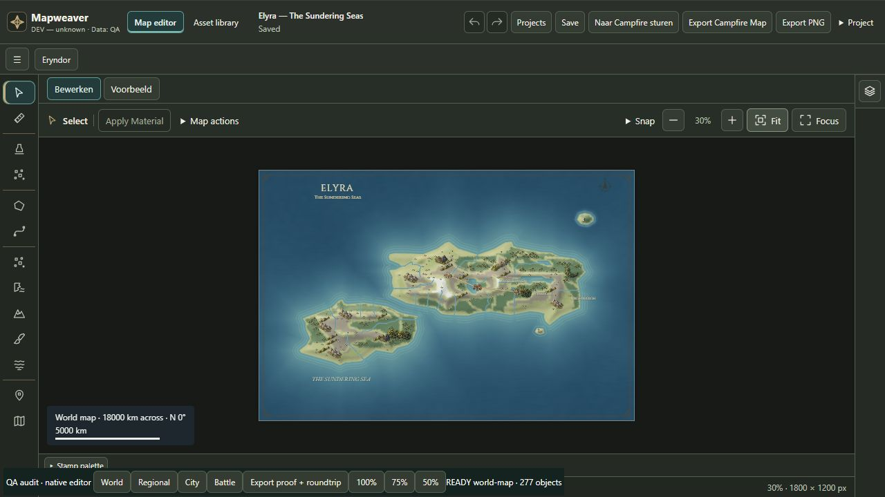
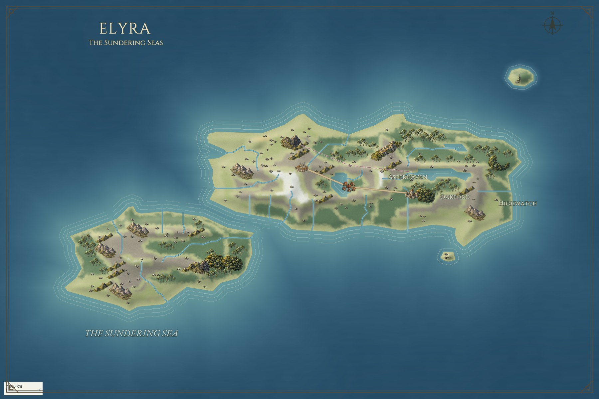
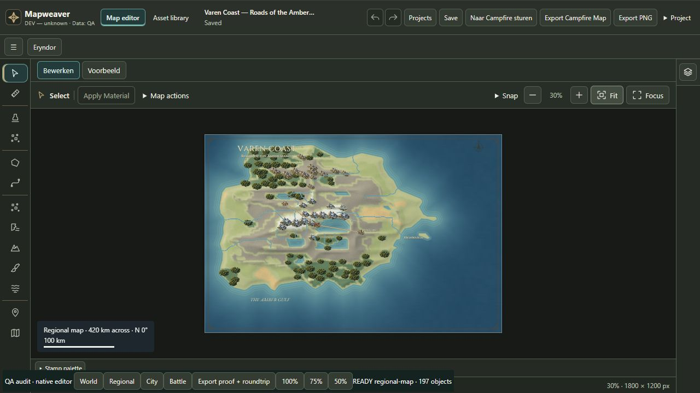
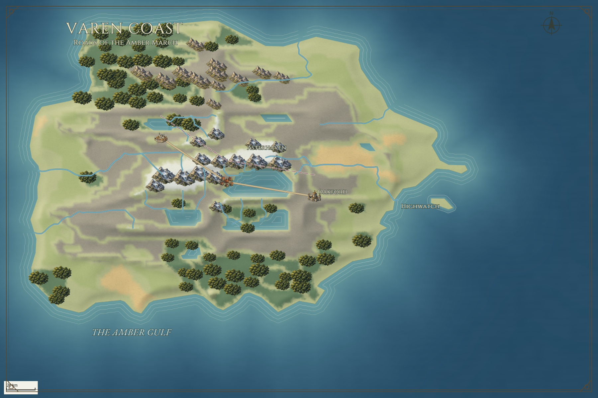
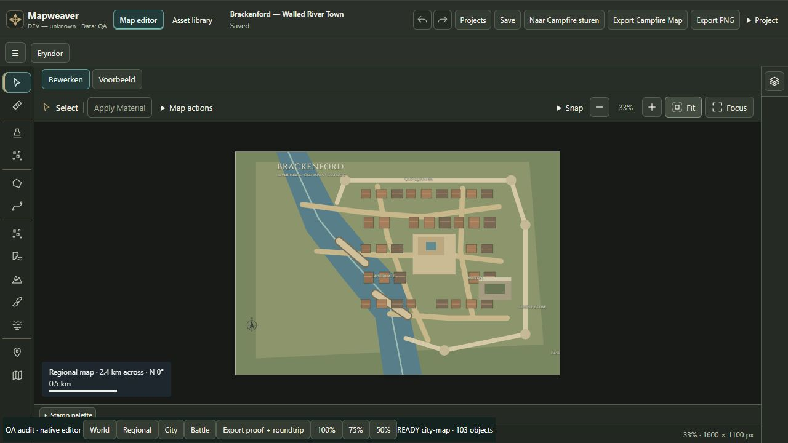
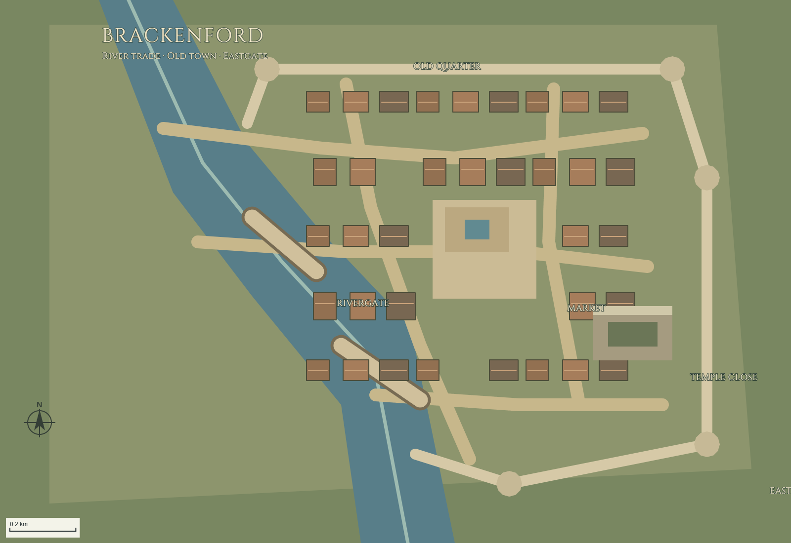
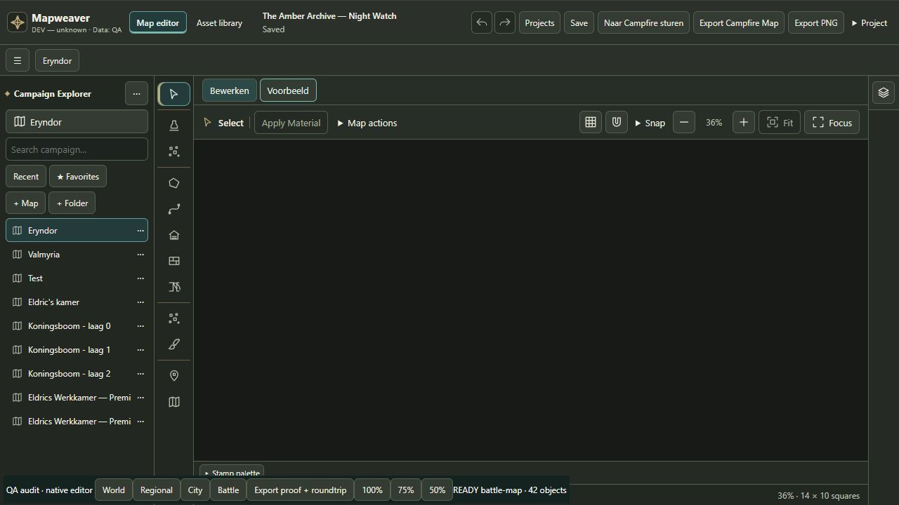
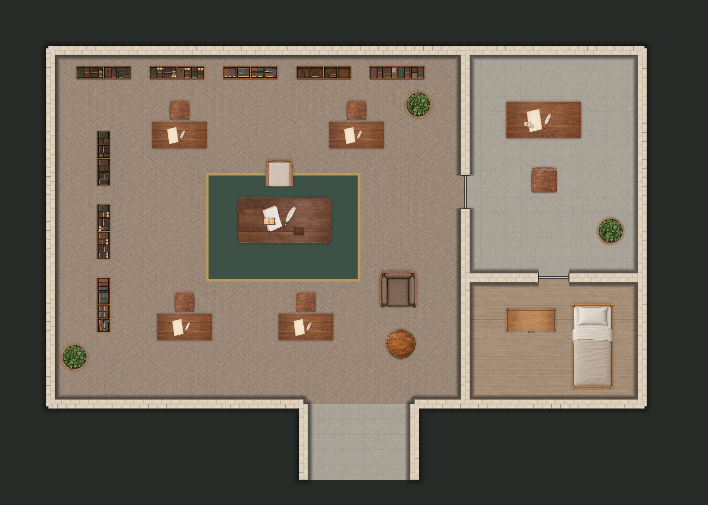

15 oktober 2026 · Bron db4117e · echte native editorbeelden, full-colour UI-exports en bewerkbare projecten. Geen externe beeldgeneratie of nabewerking. Dit is een audit, geen feature-release.
Beoordeling · Methode · Functies · Assets · Vijf verbeteringen
World en Regional: beperkt productierijp. City: niet productierijp voor de referentiekwaliteit. Battle: bruikbaar maar onvolwassen, strikt90° top-down. Bestaande tests:76 pass,7 fail. E3: Battle native UI en technische snapshot-render verschillen; zie beide beelden en vergelijking in battle-map/. De native UI-download is leidend. Volledige details in het rapport.
277 native objecten · 1800×1200px · Bewerkbaar project · Bevindingen · Volledige native PNG


197 native objecten · 1800×1200px · Bewerkbaar project · Bevindingen · Volledige native PNG


103 native objecten · 1600×1100px · Bewerkbaar project · Bevindingen · Volledige native PNG


42 native objecten · 1400×1000px · Bewerkbaar project · Bevindingen · Volledige native PNG

